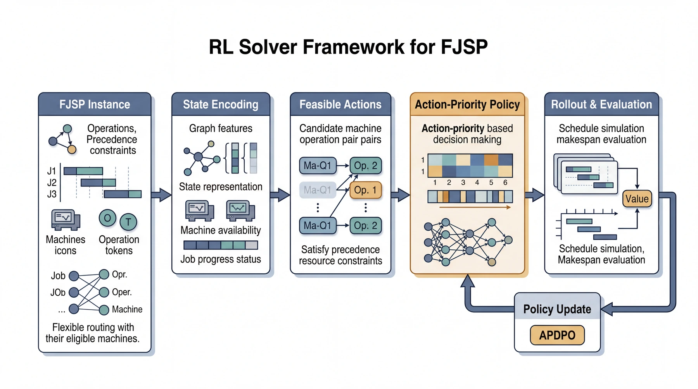

Ph.D. in Data Science
Sep 2022 – Present
The Chinese University of Hong Kong, Shenzhen
Completed seven doctoral courses with six A grades and one A-.
I am a Ph.D. student in Data Science at The Chinese University of Hong Kong, Shenzhen, advised by Prof. Jianfeng Mao.
My recent work focuses on reinforcement learning for combinatorial optimization and scheduling, especially flexible job shop scheduling problems under safety, scalability, and structure-awareness considerations.
Before starting my doctoral study, I received my B.S. in Mathematics and Applied Mathematics from CUHK-Shenzhen with first-class honors. I have also worked on smart transportation, crowdsensing, and sensing-driven intelligent systems through research projects at the Shenzhen Research Institute of Big Data (SRIBD) and the Shenzhen Institute of Artificial Intelligence and Robotics for Society (AIRS).
I am passionate about pursuing meaningful academic success and transforming that success into real-world impact. I hope to build research that is rigorous, original, and useful for practical decision-making and optimization problems.
My research interests lie in reinforcement learning, data-driven and contextual optimization, and multi-agent systems, particularly for scheduling and other complex decision-making problems.

Featured Project
Reinforcement learning for flexible job shop scheduling, with an emphasis on solution quality, decision transparency, and computational efficiency.
Under review at IEEE Transactions on Automatic Control.
Under review at Operations Research.
Under review at IEEE Transactions on Industrial Informatics.
CASE, 2025.
Accepted at the 2025 IEEE Conference on Decision and Control.
Under review at IEEE Transactions on Automation Science and Engineering.
IEEE Internet of Things Journal, 2024.
Sep 2022 – Present
The Chinese University of Hong Kong, Shenzhen
Completed seven doctoral courses with six A grades and one A-.
Aug 2018 – Jun 2022
The Chinese University of Hong Kong, Shenzhen
First-class honors, major GPA 3.909/4.000.
Research Project Apr 2023 – Oct 2023
Developed a modular discrete-event dynamic system framework for large-scale EMU maintenance scheduling, modeling hierarchical operations, workstation allocation, operation intervals, and track first-in-last-out constraints to support robust scheduling under evolving project requirements.
Industry Collaboration Project Sep 2022 – Sep 2024
Worked on data-driven evaluation, business evolution analysis, and intelligent scheduling optimization for Huawei subcontracting operations, with emphasis on anomaly diagnosis, service evaluation and deduction, and distributed and centralized delivery scheduling.
Shenzhen Research Institute of Big Data Jun 2023 – Present
Built a simulation platform for multi-mode resource-constrained project scheduling problems.
Shenzhen Institute of Artificial Intelligence and Robotics for Society Jun 2021 – Mar 2022
Worked on graph neural networks, MCMC-based modeling, and robotics-related investigation tasks.
Shenzhen Research Institute of Big Data Jun 2019 – Jun 2021
Studied roadside parking detection, crowdsensing, and multi-sensor smart city applications.
IEEE CDC 2025 Rio de Janeiro
IWCMC 2021 Harbin
IINTEC 2019 Tunisia
For research inquiries, please reach me by email.